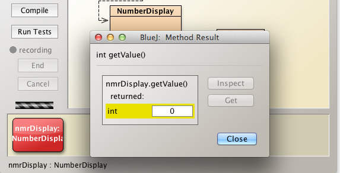

Solutions
These are the solutions to the exercises relating to the BlueJ ClockDisplay and NumberDisplay classes.
Exercise 1
Create a NumberDisplay object and exercise its methods:
- display()
- getValue()
- incrementValue()
Use the inspector to observe changes in state that you bring about.
Solution
Open the clock project that you developed as part of the preceeding lab and save it to your working solutions folder at workspaceBlueJ/labs-solutions/session03.
Alternatively download a copy of the project from here and expand it into your solutions working folder.
- Open the clock project and create a NumberDisplay object named nmrDisplay.
See Figure 1 and observe nmrDisplay on the object bench.
Insert the number 12 as an argument in the constructor
- This represents a 12 hour clock, for example.
Right click on the NumberDisplay object on the object bench and invoke display.
- See Figure 2 for the response to the invocation.
The string is "00" as expected since no activity has taken place on the object.
Invoke getValue.
- See Figure 3 for the response.
- The return number is zero, the content of the field value as expected - no activity on the object.

- Invoke incrementValue
- This increments the value field by 1.
- Invoke display and getValue in turn and note the outputs have now changed to "01" and 1 respectively as illustrated in Figure 4.
- These are the expected outputs.
Continue invoking incrementValue until the string returned by invoking display is "11"
- Use the inspector to study the object state (See Figure 5).
Increment again and observe that the display has now rolled over to "00", the exact behaviour that one would expect in the hour display of a 12-hour clock.
Exercise 2
Here is the code for the NumberDisplay increment method:
/**
* Use modular arithmetic to increment value
* thus ensuring it always within legal range
*/
public void incrementValue()
{
value = (value + 1) % limit;
}Refactor this code as follows:
- Discard use of the modulo operator (%).
- Instead, use the if statement.
Solution
The incrementValue above does the following:
- Increments value by 1
- Divides result by limit
- Replaces the original number in value with the remainder when division takes place.
- Example 1: if value + 1 is 10 and limit is 12 then value becomes 10
- Because 10/12 is equal to zero plus remainder 10
- Example 2: if value + 1 is 12 and limit is 12 then value becomes 0
- Because 12/12 equals 1 plus remainder 0
- Example 1: if value + 1 is 10 and limit is 12 then value becomes 10
- Note: It's the remainder that's assigned to value following division by limit.
We require a method the achieves a similar result when using the if statement rather than the % operator.
Here is one such approach:
int value;
int limit;
...
private void incrementValue()
{
value += 1;
if(value >= limit)
{
value = 0;
//the following is a more general and robust expression: Question: Why so?
//value = value - (value/limit)*limit;
}
}This method is equally good as original.
Test with sample values such as:
- value 10 , limit 12
- value 12 , limit 12
- value 13 , limit 12
Let's write a test class TestModulo in the clock project to test such values:
public class TestModulo
{
int limit;
int value;
public void testIncrementValue(int limit, int value)
{
this.limit = limit;
this.value = value;
incrementValue();
System.out.println("Limit: "+this.limit + " Value: "+this.value);
}
private void incrementValue()
{
value += 1;
if(value >= limit)
{
value = value - (value/limit)*limit;
}
}
}Instantiate TestModulo and invoke testIncrementValue with a range of values, ensuring you test the edge conditions.
Here is suggested list of values to test and the corresponding outputs (where the method incrementValue uses the expression value = value - (value/limit)\limit*):
See Figure 1 where the last row of data input and the expected value 4 output.
Exercise 3
Here is the code for the NumberDisplay setValue method:
/**
* We check parameter value is in range
* If not in range, do nothing
* @param value is the new value
*/
public void setValue(int value)
{
if(value >= 0 && value < this.limit)
{
this.value = value;
}
}What would the consequences be were you to replace the line
- if(value >= 0 && value < this.limit)
with the following:
if(value >= 0 || value < this.limit)?
Test the edge cases in the case of both lines of code.
By edge case is meant the situation that arises at the extreme values, for example here where:
- value less than zero
- value equal to zero
- value equal to limit
- value greater than limit
Solution
We are working on the assumption that limit will always be greater than zero as in the case of the clock example.
The expression value >= 0 || value < limit will always resolve to true.
The reason should be apparent from Figure 1: the expression includes all values in the range -infinity to +infinity.
We shall now test the edge cases. Remember that the expression
- (value >= 0 || value < limit) is true if either
- value >= 0 is true or
- value < limit is true.
Edge case tests for expression (value >= 0 || value < limit).
- value < 0
- value < limit is true
- Therefore expresssion evaluates to true.
- value == 0
- value >= 0 is true.
- Therefore expresssion evaluates to true.
- value == limit
- value >= 0 is true.
- Therefore expresssion evaluates to true.
- value > limit
- value >= 0 is true is true
- Therefore expresssion evaluates to true.
The consequence, therefore, of replacing the line:
- if(value >= 0 && value < this.limit)
with the line
- if(value >= 0 || value < this.limit)
would be that were we to include the method setValue in NumberDisplay and provide access to this method to a clock instance, we would be in a position to inject an illegal time in the clock.
We shall carry out some refactoring and then test the effects of invoking
- the un-modified setValue
- the modified setValue
Include the un-modified method setValue in NumberDisplay class:
/**
* We check parameter value is in range
* If not in range, do nothing
* @param value is the new value
*/
public void setValue(int value)
{
if(value >= 0 && value < this.limit)
{
this.value = value;
}
}Open ClockDisplay code in the editor and note the presence of a NumberDisplay hours field.
Insert this method in ClockDisplay:
public void resetHour(int value)
{
hours.setValue(value);
}Open the Clock source in the editor.
Observe the presence of a field private ClockDisplay clock.
Insert this method in Clock:
public void resetHour(int value)
{
clock.resetHour(value);
}We have now created a facility to reset the hour in a running clock. Let's check this out.
Compile the project and instantiate a Clock object.
Start and stop the clock to verify it runs ok.
Right click on the clock object and invoke resetHour, entering 23 as a parameter.
Start the clock.
- The hour display should immediately appear as 23.
Stop the clock.
Invoke resetHour with 25 as a parameter.
Start the clock.
The hour remains unchanged at 23.
This is the behaviour we have programmed. Examine the code for setValue to understand why.
Now change the line in setValue from
if(value >= 0 && value < this.limit) to
if(value >= 0 || value < this.limit)
Conduct the same tests as above and observe how the clock can be manipulated to display an illegal time.
- See Figures 2, 3 and 4.
It would be particularly worthwhile taking the time to understand the steps taken above to refactor the code so as to be able to change the hour display. That is, introducing the methods:
- setValue into Clock
- setValue into ClockDisplay.
For example: why could we not simply invoke the setValue directly in NumberDisplay when we wish to change the hour display?
Exercise 4
List all possible results of the expression n % 10 where n is an integer variable and % is the modulus operator.
You will find the definition of an integer here
Here's a simple example that may help those unfamiliar with this operator:
- 20 % 3 evaluates to 2
- 20 / 3 is 6 with remainder 2
- 6 * 3 == 18
- 20 - 18 = 2
Evaluation:
- Simple examples can be done by observation
- Excel has a function MOD(number, divisor)
- Java % operator referred to as remainder operator
Solution
Let's use a brute-force approach by constructing a table with 2 columns as shown in Figure 1.
- The first column contains a range of values for n.
- The second column contains corresponding values for n%10.
- The pattern is clear:
- The range of n%10 is [0, 9]
The list of all possible results of n%10, therefore, consists of the digits 0 to 9 inclusive.
Exercise 5
Here's the method NumberDisplay display()
public String display()
{
//add a leading zero where necessary
if(value < 10)
{
return ("0" + value);
}
else
{
return Integer.toString(value);
}
}Check what the result of substituting the following for return Integer.toString(value):
- return "" + value
- return value + ""
Explain any differences in behaviour.
Solution
Test the differences, if any, by writing a simple class named, for example, TestString.
public class TestString
{
int value;
public TestString(int value)
{
this.value = value;
}
public void test()
{
System.out.println("Integer.toString : " + display());
System.out.println("\"\" + value : "+display2());
System.out.println("value + \"\" : "+display3());
}
//NumberDisplay display method
private String display()
{
//add a leading zero where necessary
if(value < 10)
{
return ("0" + value);
}
else
{
return Integer.toString(value);
}
}
//Replace Integer.toString(value) with "" + value
private String display2()
{
//add a leading zero where necessary
if(value < 10)
{
return ("0" + value);
}
else
{
return ("" + value);
}
}
//Replace Integer.toString(value) with value + ""
private String display3()
{
//add a leading zero where necessary
if(value < 10)
{
return ("0" + value);
}
else
{
return (value + "");
}
}
}Instantiate TestString and invoke test. The output is displayed in Figure 1.
Notice that we have chosen a test value of 11 so as to route the code execution path through the else part of the code which is were we wish to conduct the test.
There is no discernable difference between the output of the three methods display, display1 and display2.
- This is so because The Java language provides special support for the string concatenation operator ( + ), and for conversion of other objects to strings (see here).
As a consequence, both expressions
- value + ""
"" + value
resolve to String objects.
However, were one to replace, for example, return (value + ""); with return value;, a compile time error would be triggered with the message incompatible types.
Note: In the method public void test(), consider the statment
System.out.println("\"\" + value : "+display2());
We are using what is referred to as an escape sequence here (\) to print the double quotes.
Experiment by omitting the escape sequences and observing the results.
See Figure 2 for a list of various escape sequences and here for further information.
Exercise 6 (Advanced)
What is the value of each of the boolean variables?
Provide a short explanation in each case.
- boolean a = 8 < 9;
- boolean b = 9 < 8;
- boolean c = !(8 < 9);
- boolean d = !true;
- boolean e = !false;
- boolean f = (a == true);
- boolean g = (a && b) == true;
- boolean h = (a || b) == true;
- boolean j = (!a && !b) == false;
- boolean k = (!a || !b) == false;
Test your answers with the class LogicalOperator:
- Skeleton code provided below
- Two methods implemented
- public boolean a();
- public boolean g();
- Write the remaining methods b(), c(), d(), e(), f(), h(), j(), k() corresponding to the items above.
- Two methods implemented
public class LogicalOperator
{
public boolean a()
{
return 8 < 9;
}
//Note the internal method call to methods a() & b()
public boolean g()
{
return (a() && b()) == true;
}
}Solution
Here is the completed source for LogicalOperator:
public class LogicalOperator
{
public boolean a()
{
return 8 < 9;
}
public boolean b()
{
return 9 < 8;
}
public boolean c()
{
return !(8 < 9);
}
public boolean d()
{
return !true;
}
public boolean e()
{
return !false;
}
//Note the internal method call to method a()
public boolean f()
{
return (a() == true);
}
public boolean g()
{
return (a() && b()) == true;
}
public boolean h()
{
return ((a() || b()) == true);
}
public boolean j()
{
return ((!a() && !b()) == false);
}
public boolean k()
{
return ((!a() || !b()) == false);
}
}Instantiate LogicalOperator and exercise all the methods in turn. See Figure 1.

Check the return values against the truth tables below in Figure 2.
- Invoke each method in turn and verity the results correspond to those in the truth tables.
Exercise 7
- Create a new project in session03 folder named strings
- Create a new class TestStrings
- Replace the source code with the skeleton class below.
- Create a TestStrings object on the object bench
- Examine the list of methods available by right clicking on the TestStrings object
- These are illustrated in Figure 1.
Complete the method bodies in TestStrings
Satisfy yourself that your answers are correct.
public class TestStrings { String s0; String s1; public TestStrings() { s0 = new String("ICTSkills Group"); s1 = new String("ICTSkills group"); } /* * Check if s0 and s1 are equal * @return true if s0 and s1 equal else false */ public boolean equals() { return false; } /* * Check if s0 and s1 equal ignoring case * @return true if s0 and s1 equal else false */ public boolean equalsIgnoreCase() { return false; } /* * Return concatenation of s0, s1 and s * @param s string to be concatenated with instance variable strings * @return the composite string */ public String stringConcat(String s) { return ""; } /* * @param sDouble is String representation of a primitive double e.g. "100.345" * @return param converted to double */ public double convertToDouble(String sDouble) { return 0.0; } /* * @param sInteger is String representation of a primitive int e.g. "100" * @return param converted to int */ public int convertToInteger(String sInteger) { return 0; } /* * @param number to be converted to a String * @return param converted to String */ public String convertToString(int number) { return ""; } }

Solution
Here is the completed class TestStrings:
public class TestStrings
{
String s0;
String s1;
public TestStrings()
{
s0 = new String("ICTSkills Group");
s1 = new String("ICTSkills group");
}
/*
* Check if s0 and s1 are equal
* @return true if s0 and s1 equal else false
*/
public boolean equals()
{
return s0.equals(s1);
}
/*
* Check if s0 and s1 equal ignoring case
* @return true if s0 and s1 equal else false
*/
public boolean equalsIgnoreCase()
{
return s0.equalsIgnoreCase(s1);
}
/*
* Return concatenation of s0, s1 and s
* @param s string to be concatenated with instance variable strings
* @return the composite string
*/
public String stringConcat(String s)
{
return s0.concat(s1).concat(s);
//alternatively: return s0 + s1 + s;
}
/*
* @param sDouble is String representation of a primitive double e.g. "100.345"
* @return param converted to double
*/
public double convertToDouble(String sDouble)
{
return Double.parseDouble(sDouble);
}
/*
* @param sInteger is String representation of a primitive int e.g. "100"
* @return param converted to int
*/
public int convertToInteger(String sInteger)
{
return Integer.parseInt(sInteger);
}
/*
* @param number to be converted to a String
* @return param converted to String
*/
public String convertToString(int number)
{
return Integer.toString(number);
//alternatively: return String.valueOf(number);
//alternatively: return "" + number;
}
}